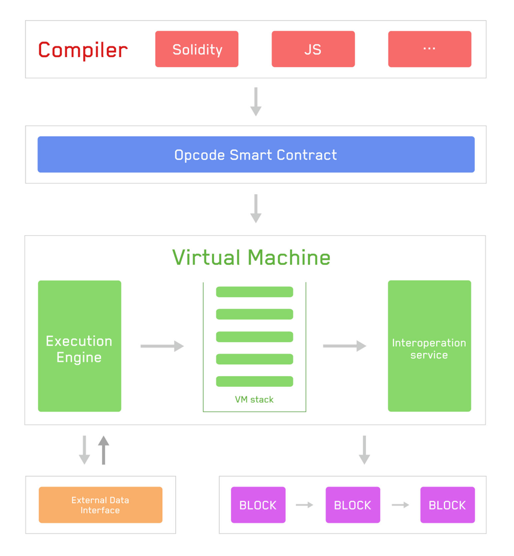

波场虚拟机（TVM）
TVM是波场智能合约的运行环境，网络中的每个节点都维护着一个 TVM 实体。
波场协议保持着这个状态机的持续、不间断和不可更改的运行。
在链上的任何给定区块中，波场都有且仅有一个 "canonical" 状态，TVM 定义了在区块间计算新有效状态的规则。
从账本到状态机
分布式账本这一比喻经常被用来描述像比特币这样的区块链，它利用密码学的基本工具实现了一种去中心化的货币。
加密货币的行为与普通货币类似，因为其规则规定了人们可以和不可以修改分类账的行为。
例如，一个比特币地址花费的比特币不能超过它之前收到的比特币。这些规则是比特币所有交易的基础。
状态转换函数
TVM 的行为就像数学函数一样： 给定一个输入，它就会产生一个确定的输出。 因此，将波场更正式地描述为具有状态转换函数是非常有用的：
Y(S, T) = S'
给定一个旧的有效状态（S）和一组新的有效事务（T），波场状态转换函数 Y（S，T）会产生一个新的有效输出状态 S'。
状态
在波场网络中，状态是一个名为 Merkle Trie 的巨大数据结构，它通过哈希值将所有账户联系起来，并可还原为存储在区块链上的单一根哈希值。
交易
交易是来自账户的加密签名指令。交易分为系统合约交易和智能合约交易两类，其中智能合约交易包括调用合约信息的交易和创建合约的交易。
创建合约会创建一个新的合约账户，其中包含编译好的智能合约字节码。每当其他账户对该合约进行消息调用时，就会在 TVM 中执行其字节码。
TVM 介绍
EVM 以堆栈机的形式执行，深度为 1024 项。每个项都是一个 256 位字，这样选择是为了便于使用 256 位加密技术（如 Keccak-256 哈希值或 secp256k1 签名）。
编译后的智能合约字节码以大量 EVM 操作码的形式执行，执行 XOR、AND、ADD、SUB 等标准堆栈操作。 EVM 还实现了一些特定于区块链的堆栈操作，如 ADDRESS、BALANCE、BLOCKHASH 等。 更多操作码请参阅 波场操作码
下面的流程图显示了 TVM 的工作原理： 
具体流程如下：
- 编译器将智能合约编译成可在 TVM 上读取和执行的字节码。
- TVM 通过操作码处理数据。
- TVM 通过互操作层访问区块链数据并调用外部数据接口。
- TVM 执行完毕后，状态会被写入块中，用户可以通过 API 查询执行结果和状态。
与 EVM 的区别
TVM 基本上与 EVM 兼容，只是在细节上有些不同
- TVM 使用
能量而不是gas。目前能源价格为210sun，GASPRICE,BASEFEE返回 TVM 中的能量单价。 - 在 TVM 中，
DIFFICULTY和GASLIMIT返回 0 - TVM 中的大多数操作码的能耗与 EVM 中的操作码的能耗相当，其中一些操作码的能耗较低（如
SLOAD、CALL）。 CREATE2创建的合同地址前缀与 EVM 不同： TVM 选择0x41作为前缀，计算公式为keccak256( 0x41 ++ address ++ salt ++ keccak256(init_code))[12:]- 预编译合约
Ripemd160(0x03)： TVM 对输入进行两次 SHA-256 计算。将有一个新的预编译合约来实现标准的Ripemd160 - 预编译合同
0x09：EVM 在此地址上有Blake2F；在 TVM 上是BatchValidateSign。参见 TIP-43 - 向合约发送 TRX 有两种方法： 转账和带有
callValue的触发智能合约。转账不会调用合约中的后备函数
TVM 具有基于波场特性的新功能
- TRC-10 相关操作码：
CALLTOKEN(0xd0)、TOKENBALANCE(0xd1)、CALLTOKENVALUE(0xd2)和CALLTOKENID(0xd3) - 判断地址是否属于合约：
ISCONTRACT(0xd4)TIP-44 - 批量验证普通签名和多重签名：
BatchValidateSign(0x09)TIP-43,ValidateMultiSign(0x0a)TIP-60 - 匿名合约和
Librustzcash相关预编译合约：verifyMintProof(0x1000001)、verifyMintProof(0x1000002)、verifyMintProof(0x1000003)和merkleHash(0x1000004)。参见 TIP-135、TIP-137 和 TIP-138。 - 冻结/解冻功能：
FREEZE(0xd5)、UNFREEZE(0xd6)和FREEZEEXPIRETIME(0xd7)。请参见 TIP-157。 - 与合约表决相关的操作码和预编译合约：
VOTEWITNESS(0xd8)、WITHDRAWREWARD(0xd9)、RewardBalance(0x1000006)、IsSrCandidate(0x1000006)、VoteCount(0x1000007)、UsedVoteCount(0x1000008)、ReceivedVoteCount(0x1000009)和TotalVoteCount(0x100000a)。请参见 TIP-271。 - 与 Stake 2.0 相关的冻结/解冻/委托/解除委托函数：
FREEZEBALANCEV2(0xda),UNFREEZEBALANCEV2(0xdb),CANCELALLUNFREEZEV2(0xdc),WITHDRAWEXPIREUNFREEZE(0xdd),DELEGATERESOURCE(0xde)、 和GetChainParameter(0x100000b)、AvailableUnfreezeV2Size(0x100000c)、UnfreezableBalanceV2(0x100000d)、ExpireUnfreezeBalanceV2(0x100000e),DelegatableResource(0x100000f),ResourceV2(0x1000010),CheckUnDelegateResource(0x1000011),ResourceUsage(0x1000012),TotalResource(0x1000013),TotalDelegatedResource(0x1000014),TotalAcquiredResource(0x1000015). 请参见 TIP-467。
兼容解决方案目前正在讨论中，如果您感兴趣，请转到 GitHub ISSUE 参与讨论。